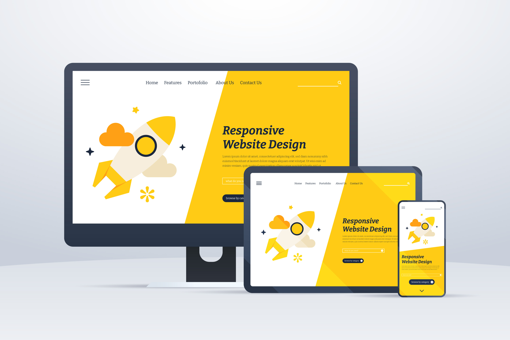
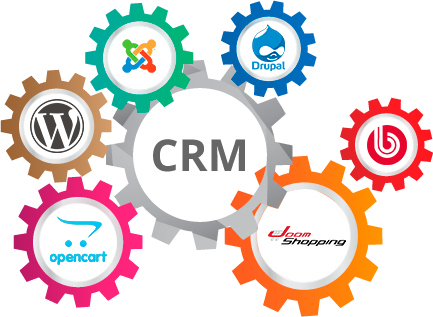

О проекте
Ecutaway.com - это сервис для обмена, создания и хранения цифровых визиток для бизнесменов и сотрудников компаний с помощью доступа к корпоративному порталу организации или мобильного приложения.


Ecutaway-визитка всегда у вас под рукой! Потому что находиться у вас в телефоне. Убедитесь только, что он заряжен =)
Сколько ваша организация может сэкономить?

Вот вам немножечко цифр)
По статистике компаний Adobe и Forbes 88% выданных визитных карточек выбрасываются менее, чем за неделю и 63% людей выбрасывают визитную карточку, потому что не нуждаются в услуге или продукте на момент получения визитки.
Средняя стоимость производства 250 визиток на 1 сотрудника равна, примерно, 800 руб. (включая оплату дизайнера, полиграфию и доставку). На основе данных мы можем оценить стоимость выброшенных визиток.
1) (250 визиток *88%)/100% = 220 (количества выброшенных визиток из 250 произведенных визиток)
2) 800 руб. / 250 визиток = 3.2 руб. (стоимость одной визитки)
3) 3.2 руб. * 220 руб. = 704 руб. (затраченная сумма на выброшенные визитки)
В тоже время создание цифровой визитки по итогам проведенных собеседований с фокус группами разных возрастов составляет примерно 30 мин. 100% визиток автоматически сохраняются в приложении и контактной книжке телефона, соответственно, ее невозможно выбросить.
Соответственно, 30 мин создания цифровых визиток = 0.02 дня.
1) 7 дней / 0.02 дней = 350 раз (кол-во раз увеличения скорости создания пользователем приложения своей цифровой визитки)
На основе вышеприведенных данных, видно, что рентабельность инвестированных денежных средств в производство картонных визиток равно -87,25%, когда, в свою очередь, цифровая визитка при самых худших рентабельных показателях будет равна 0% из-за своей функциональности.
Критики скажут: “Ну ок. Но чем вы лучше других подобных сервисов?”

Гибкий интерфейс
Стилизуйте внешний вид вашей визитки по вашему желанию. Устанавливайте свой корпоративный стиль

Интеграция плагинов
Вы можете интегрировать большое количество разных плагинов для выстраивания РК через визитки сотрудников

Расширенная статистика
Выгружайте статистику распространения визиток вашими сотрудниками и принимайте правильные управленческие решения
Понравился проект?
Тогда скорее свяжитесь с нами, чтобы стать одним из первых наших клиентов и получить скидку 25% для вашей компании на первый год использования сервиса